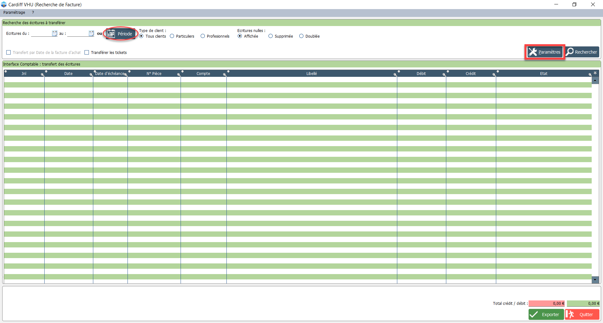

Interface comptable
Explications concernant la comptabilité
Tout d'abord, voici quelques explications concernant la comptabilité générale.
Dans un premier temps il faut faire la différence entre les comptes de bilan (1 à 5) qui serviront à élaborer le bilan en fin d’exercice et les comptes de gestion (6 et 7) qui vont concerner le compte de résultat.
Pour les comptes de bilan (1 à 5), ils vont être utilisés pour recenser les opérations qui affectent le patrimoine de l’entreprise : Trésorerie, outillage, ordinateurs, stocks de pièces et de voitures.
Pour les comptes de gestion servant au compte de résultat (6 et 7) ils vont être utilisés pour mesurer les achats et les ventes de l’entreprise. Ces comptes vont concerner les achats "6" (achats de matériels, achats de véhicules, achats de pièces) et les ventes "7" (ventes de pièces détachées PRE ou PN, ventes de prestations et ventes de véhicules VA/VO/carcasses).

Dans les opérations du quotidien qui sont enregistrées dans VHU2, il faut utiliser principalement les comptes suivants :

Pour chaque classe, un journal permet de lister les opérations. Dans le logiciel VHU2 il y a le journal des ventes (classe 7) disponible et éditable avec l'ensemble des factures, bons de livraisons, tickets et avoirs.
Les écritures comptables dans VHU2 concernent uniquement les achats et les ventes.
Voici un exemple simple d’écritures d’achats et de ventes que le logiciel peut éditer et exporter vers le format d'un logiciel de comptabilité (ex : sage, ciel, EBP, etc).

La méthodologie restera la même que ce soit de la vente de marchandises (véhicules ou pièces détachées) ou de l’achat de fournitures (véhicules ou pièces détachées).
Seuls les taux de TVA peuvent changer (0, 5.5, 10 et 20%). Il se peut aussi qu’il y ait des acomptes, du transport à rajouter. Nous avons ici un exemple de facture simple. Le total du débit doit toujours être égal au total du crédit.
Fonctionnement des comptes dans VHU2.
Les comptes de la classe 4 : (compte tiers, fournisseurs, clients et TVA)
- Les comptes fournisseurs (401) et les comptes clients (411) : Ils sont présents dans chaque écriture comptable concernant un achat ou une vente. Afin de les différencier, la méthode la plus simple est de mettre les 3 premiers chiffres du compte avec les 3 premières lettres du fournisseur.
Exemple : Le fournisseur Lasserre va être renommé dans la compta 401LAS et le client Gaujacq va être renommé 411GAU.
- Les comptes de TVA : Lors d’une opération d'achat, il faut utiliser la TVA déductible (445660). Lors d’un achat la TVA peut être de 20, 10 ou 0%. Elle est calculée à partir du HT du produit. Elle est toujours comptabilisée au débit du compte.
Pour une opération de vente, il faut utiliser le compte de TVA Collectée (445710). Dans le cadre des centres VHU, la TVA peut être de 20, 10 ou 0% et sera aussi calculée à partir du HT. Elle se comptablise toujours au crédit du compte.
Les comptes de la classe 6 : (achats)
Il sont utilisés pour les opérations liées aux achats. Le logiciel VHU2 utilise uniquement les comptes d’achats de marchandises (607) et d’approvisionnements/achats stockés (602). Il sont enregistrés au débit du compte. Les montants sont toujours HT et la TVA (445660) est généralement de 20% si l’on achète à des professionnels et de 0% si l’on achète à des particuliers. Dans une écriture d’achat, le compte "6" sera toujours associé à un compte fournisseur.
Les comptes de la classe 7 : (ventes)
Ils concernent uniquement les ventes. Le logiciel VHU2 utilise les comptes de ventes de produits finis (701), de ventes de prestations (706) et de ventes de marchandises (707). Ils sont enregistrés au crédit du compte. Comme pour les achats, le montant est HT. Ce compte est souvent utilisé avec le compte 445710 (TVA collectée). La TVA est généralement de 20% si l’on vend à des professionnels et de 0% ou 10% si l’on vend à des particuliers. Dans une écriture de vente, le compte "7" est toujours associé à un compte client.
VHU2 permet donc d'extraire les données comptables de votre activité dans un fichier exportable et utilisable dans votre propre logiciel comptable.
Il convient donc de renseigner le plus d'informations possibles dans VHU2 pour exporter un fichier le plus complet possible.
Explications concernant la TVA
Voici maintenant des explications concernant la taxation de la TVA.
Il existe plusieurs catégories d’opérations imposables à la TVA :
- les opérations imposables par nature, qui concerne les livraisons de biens et prestations de services effectuées par un assujetti à titre onéreux,
- les opérations imposables par décision de la loi, qui concerne les importations et les acquisitions intracommunautaires.
Ce sont les règles générales mais il existe un grand nombre d'exceptions et de cas particuliers. Malgré cela, les opérations impliquant des véhicules d'occasion et des pièces automobiles de réemploi sont concernées par la TVA.
Vous trouverez plus de détails dans les schémas ci-dessous.


Par principe, l’assujetti :
- collecte auprès de ses clients la TVA sur ses ventes pour le compte de l’Etat,
- déduit la TVA que ses fournisseurs lui ont facturée,
- verse, périodiquement, à l’Etat la différence entre la TVA collectée et la TVA déductible.
Le schéma suivant décrit la comptabilisation de la TVA selon qu'elle soit collectée ou déductible et quels comptes comptables utiliser :

La capture d'écran suivante vous montre un exemple de ce que vous pouvez faire en modifiant la liste de nature de pièces via le paramétrage des listes déroulantes.
Vous pouvez ainsi rentrer un nouveau type de pièce et paramétrer ensuite des éléments comme son type (occasion, neuf, prestation), le type de TVA qui aura été préalablement paramétré ou encore les comptes comptables associés.

L'interface comptable dans votre logiciel VHU2
Après avoir vérifié vos ventes et vos règlements dans le journal de vente et dans l'inventaire de caisse, vous pourrez exporter toutes vos données vers votre logiciel de gestion.
Pour ce faire, cliquez sur Outils depuis le menu principal, puis sur Interface Compta.

Sur cette page, choisissez la période correspondante (écrivez les dates ou bien cliquez sur Période et choisissez une option).
Cochez ensuite le type de client et la façon dont seront affichées les écritures nulles.

Si c'est votre premier export, vous devez régler quelques paramètres. Cliquez donc sur la case Paramètres à droite (vous pouvez aussi cliquer sur Paramétrages depuis le menu principal, puis sur Site et sélectionner l'onglet Comptabilité).

Sur cette page vous avez plusieurs éléments paramétrables pour adapter le logiciel à vos besoins, mais un seul est obligatoire.
Renseignez le format de votre logiciel dans la liste déroulante Interface, vous pouvez voir ci-dessus la liste des formats disponibles.
Vous pouvez saisir en dessous le nom que portera votre export et l'emplacement où il sera enregistré. Par défaut il sera dans C:\CARDIFF\VHU\COMPTA.
Enregistrez donc vos changements en bas à droite et cliquez sur Rechercher. Toutes vos écritures apparaîtront.
Si toutes vos écritures sont justes et que l'équilibrage est bon, cliquez sur Exporter en bas à droite.
Votre fichier est bien créé.
Pour le retrouver, ouvrez l'explorateur de fichiers et suivez ce chemin : C:\CARDIFF\VHU\COMPTA pour retrouver ce fichier, utilisable dans votre logiciel compta.